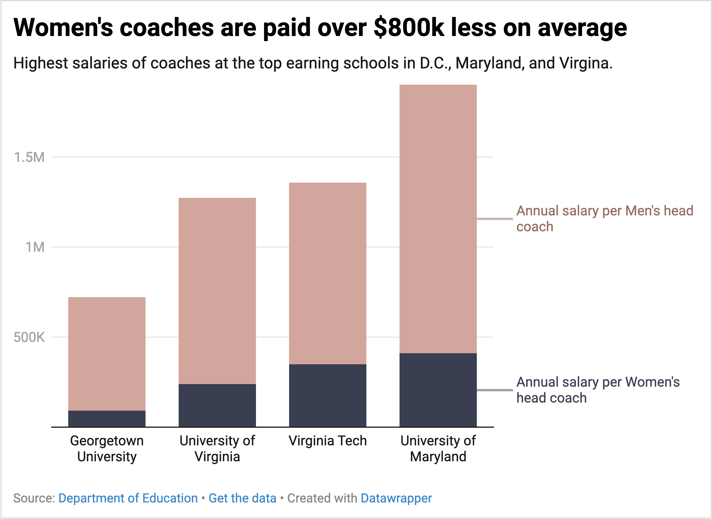
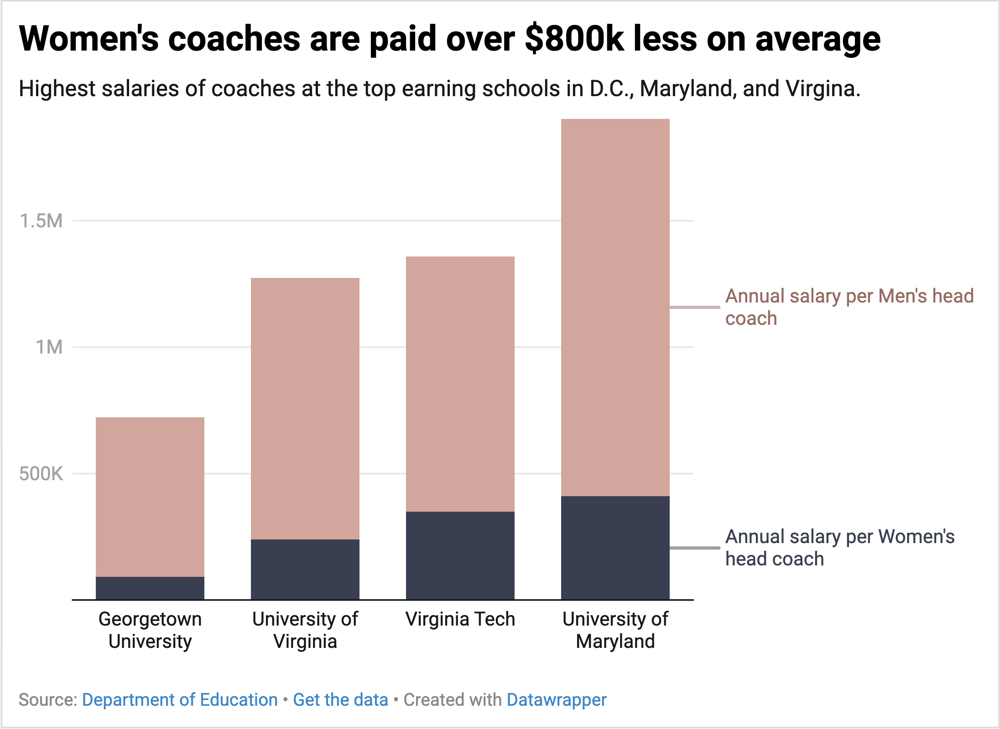

D.C. is likely about to pass a bill that will un-ban NIL deals for college athletes in Washington. NIL deals have a big impact on attracting talented athletes to certain areas and giving less-represented athletes an opprotuinity to be represented. It also greatly impacts funding for the school's athletic program. This chart shows the difference in funding, specifically for Men's versus Women's coaching salaries, as an example of how funding is different between genders.
 

I needed to add more specification on location into the actual headline instead of the sub-head and change the color choices. The feedback specifically wanted me to increase the contrast between the two colors to better demonstrate the contrast between salaries.
I increased the contrast between colors and changed the headline to include location information.